เมื่อจบบทนี้ นิสิตจะทำได้ ออกแบบหน้าจอแยกเป็นคลาส/เมธอด ใช้ CardLayout สลับหน้าจอ สร้างปุ่มนำทาง Back/Next/Home แชร์ state ระหว่างหน้า และเลือกระหว่าง CardLayout กับ JDialog/JFrame
18. จากหน้าจอเดียวสู่แอปหลายหน้า
เมื่อโปรแกรมทำได้หลายอย่าง (ลงทะเบียน, ดูรายการ, ตั้งค่า) การยัดทุกอย่างไว้หน้าจอเดียวทำให้ใช้ยาก แนวทางที่นิยมใน Swing คือ หน้าต่างหลักเดียว ที่สลับ “การ์ด” (panel) ด้วย CardLayout และใช้ JDialog สำหรับงานสั้น ๆ ที่ต้องรอคำตอบ ภาพในบทนี้มีหลายภาพต่อหนึ่งตัวอย่าง แสดงหน้าจอที่เปลี่ยนไปหลังการกดปุ่มนำทาง
18.1 ออกแบบหน้าจอแยกกัน
วางแผนหน้าจอก่อนเขียนโค้ด เขียนรายการหน้าจอและหน้าที่ของแต่ละหน้า เช่น Home, Form, Summary วาดแผนผังการนำทาง (ลูกศร: จากหน้าไหนไปหน้าไหนด้วยปุ่มอะไร) กำหนดข้อมูลที่ต้องส่งต่อระหว่างหน้า (state ร่วม) สร้างแต่ละหน้าเป็นเมธอดที่คืน JPanel หรือเป็นคลาสที่ extends JPanel เขียนตัวควบคุมการนำทาง (controller) ที่รู้จักทุกหน้า แผนผังการนำทางของแอปตัวอย่าง แผนภาพ
┌────────┐ Start ┌────────┐ Next ┌──────────┐
│ Home │ ───────▶ │ Form │ ──────▶ │ Summary │
└────────┘ └────────┘ └──────────┘
▲ ◀── Back ──┘ ◀──── Back ────┘ │
└──────────────── Home ─────────────────┘ ตัวอย่าง 18.1.1 หน้าจอเป็นคลาสที่ extends JPanelแนวคิด: แต่ละหน้าจอเป็นคลาสของตัวเอง มี component และเมธอดของหน้านั้น — ตัวอย่างนี้แสดงสองหน้าพร้อมกันในหน้าต่างทดสอบ เพื่อเห็นว่าแยกกันได้จริง
ScreenClasses.java
import javax.swing.*;
import java.awt.*;
public class ScreenClasses {
public static void main (String [] args) {
SwingUtilities .invokeLater (() -> {
JFrame frame = new JFrame ("Two screens side by side (test)" );
frame.setDefaultCloseOperation (JFrame .EXIT_ON_CLOSE );
// วาง 2 หน้าจอคู่กันเพื่อทดสอบ
JPanel both = new JPanel (new GridLayout (1 , 2 , 10 , 0 ));
// แต่ละหน้าจอเป็นออบเจ็กต์ของคลาสตัวเอง
both.add (new HomeScreen ());
both.add (new ProfileScreen ("JHope" , "Science" ));
frame.setContentPane (both);
frame.pack ();
frame.setVisible (true );
});
}
}
// หน้าจอ = คลาสลูกของ JPanel
class HomeScreen extends JPanel {
HomeScreen () {
// กำหนด layout ผ่าน constructor ของ JPanel
super (new BorderLayout (0 , 8 ));
setBorder (BorderFactory .createTitledBorder ("HomeScreen" ));
JLabel title = new JLabel ("Welcome!" , SwingConstants .CENTER );
title.setFont (title.getFont ().deriveFont (Font .BOLD , 20f ));
// add ของตัวเอง (JPanel)
add (title, BorderLayout .CENTER );
add (new JButton ("Start" ), BorderLayout .SOUTH );
}
}
class ProfileScreen extends JPanel {
// รับข้อมูลที่ต้องแสดงผ่าน constructor
ProfileScreen (String name, String faculty) {
super (new GridLayout (0 , 1 , 4 , 4 ));
setBorder (BorderFactory .createTitledBorder ("ProfileScreen" ));
add (new JLabel ("Name: " + name));
add (new JLabel ("Faculty: " + faculty));
add (new JButton ("Back" ));
}
}หน้าต่างที่ได้ (ภาพจากโปรแกรมจริง) Two screens side by side (test)
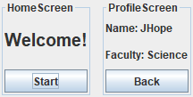
อธิบายทีละขั้น HomeScreen และ ProfileScreen เป็น JPanel ที่ประกอบหน้าตาของตัวเองใน constructor นำไปวางในหน้าต่างใดก็ได้เหมือน component ทั่วไป หัวข้อถัดไปจะวางสองหน้านี้ซ้อนกันใน CardLayout แทนการวางคู่กัน ลองคิดก่อน · แบ่งหน้าจอ แอปห้องสมุดมีฟังก์ชัน: ค้นหาหนังสือ, ดูรายละเอียดหนังสือ, ยืม, ดูรายการที่ยืมอยู่ ควรแบ่งเป็นหน้าจออะไรบ้าง และการยืมควรเป็นหน้าจอหรือ dialog
ดูคำตอบ หน้าจอ: Search, Book detail, My loans (+ Home) — การยืมเป็นงานสั้นที่ต้องยืนยัน จึงเหมาะกับ dialog (confirm) ที่เปิดจากหน้า Book detail
18.2 CardLayout: สลับหน้าจอในหน้าต่างเดียว
วิธีใช้ CardLayout Java
CardLayout cards = new CardLayout ();
JPanel container = new JPanel (cards); // container ที่ซ้อนการ์ด
container.add (homePanel, "home" ); // เพิ่มการ์ดพร้อมชื่อ
container.add (formPanel, "form" );
cards.show (container, "form" ); // แสดงการ์ดตามชื่อ
cards.next (container); cards.previous (container); cards.first (container);การ์ดทุกใบซ้อนอยู่ที่ตำแหน่งเดียวกัน มองเห็นทีละใบ ขนาดของ container เท่ากับการ์ดที่ใหญ่ที่สุด
ตัวอย่าง 18.2.1 สลับระหว่าง 3 การ์ดด้วย show(name)แนวคิด: แถบปุ่มด้านบนเรียก cards.show(container, ชื่อ) — ส่วนเนื้อหาด้านล่างเปลี่ยนไปตามปุ่มที่กด
CardTabs.java
import javax.swing.*;
import java.awt.*;
public class CardTabs {
public static void main (String [] args) {
SwingUtilities .invokeLater (() -> {
JFrame frame = new JFrame ("Card demo" );
frame.setDefaultCloseOperation (JFrame .EXIT_ON_CLOSE );
// CardLayout: ซ้อนหลายหน้า แสดงทีละหน้า
CardLayout cards = new CardLayout ();
JPanel content = new JPanel (cards);
// แต่ละหน้ามีชื่อเรียก "home"
content.add (page ("Home" , "Today: 2 classes, 1 deadline" , new Color (229 , 244 , 207 )), "home" );
content.add (page ("Settings" , "Theme: Light Language: TH" , new Color (217 , 243 , 243 )), "settings" );
content.add (page ("Help" , "Email: help@uni.ac.th" , new Color (253 , 229 , 220 )), "help" );
JPanel nav = new JPanel (new FlowLayout (FlowLayout .LEFT ));
for (String name : new String []{"Home" , "Settings" , "Help" }) {
JButton b = new JButton (name);
// แสดงหน้าตามชื่อ
b.addActionListener (e -> cards.show (content, name.toLowerCase ()));
nav.add (b);
}
frame.add (nav, BorderLayout .NORTH );
frame.add (content, BorderLayout .CENTER );
frame.setSize (320 , 170 );
frame.setVisible (true );
});
}
// เมธอดสร้างหน้าแบบเดียวกัน
static JPanel page (String title, String text, Color bg) {
JPanel p = new JPanel (new GridLayout (2 , 1 ));
p.setBackground (bg);
p.setBorder (BorderFactory .createEmptyBorder (10 , 14 , 10 , 14 ));
JLabel t = new JLabel (title);
t.setFont (t.getFont ().deriveFont (Font .BOLD , 18f ));
p.add (t);
p.add (new JLabel (text));
return p;
}
}หน้าต่างที่ได้ (ภาพจากโปรแกรมจริง) เริ่มต้น (home)
Card demo
หลังคลิก Settings
Card demo
หลังคลิก Help
Card demo
อธิบายทีละขั้น การ์ดแรกที่ add จะแสดงก่อน แต่ละปุ่มแสดงการ์ดตามชื่อ (ตัวพิมพ์เล็ก) แถบปุ่ม (NORTH) อยู่นอก CardLayout จึงเห็นตลอด ตัวอย่าง 18.2.2 next / previous: วิซาร์ดแบบเรียงลำดับแนวคิด: สำหรับขั้นตอนที่ต้องทำตามลำดับ ใช้ cards.next/previous และเก็บหมายเลขขั้นเพื่อเปิด/ปิดปุ่มให้ถูก
StepWizard.java
import javax.swing.*;
import java.awt.*;
public class StepWizard {
private static int step = 0 ; // ขั้นตอนปัจจุบัน
private static final String [] STEPS = {"1. Choose course" , "2. Pick a section" , "3. Confirm" };
public static void main (String [] args) {
SwingUtilities .invokeLater (() -> {
JFrame frame = new JFrame ("Enrollment wizard" );
frame.setDefaultCloseOperation (JFrame .EXIT_ON_CLOSE );
CardLayout cards = new CardLayout ();
JPanel content = new JPanel (cards);
for (String s : STEPS ) {
JLabel l = new JLabel (s, SwingConstants .CENTER );
l.setFont (l.getFont ().deriveFont (Font .BOLD , 16f ));
content.add (l, s); // ใช้ข้อความเป็นชื่อการ์ด
}
JLabel progress = new JLabel ();
JButton back = new JButton ("< Back" );
JButton next = new JButton ("Next >" );
// อัปเดตปุ่มและข้อความตามขั้นตอน
Runnable refresh = () -> {
progress.setText ("Step " + (step + 1 ) + " of " + STEPS .length);
// ขั้นแรกย้อนกลับไม่ได้
back.setEnabled (step > 0 );
// ขั้นสุดท้ายเปลี่ยนเป็น Finish
next.setText (step == STEPS .length - 1 ? "Finish" : "Next >" );
};
// previous: ไปการ์ดก่อนหน้า
back.addActionListener (e -> { step--; cards.previous (content); refresh.run (); });
next.addActionListener (e -> {
if (step < STEPS .length - 1 ) {
step++;
// next: ไปการ์ดถัดไป
cards.next (content);
refresh.run ();
} else {
JOptionPane .showMessageDialog (frame, "Enrolled!" );
}
});
JPanel bottom = new JPanel (new BorderLayout ());
bottom.add (progress, BorderLayout .WEST );
JPanel buttons = new JPanel ();
buttons.add (back);
buttons.add (next);
bottom.add (buttons, BorderLayout .EAST );
bottom.setBorder (BorderFactory .createEmptyBorder (0 , 8 , 0 , 0 ));
refresh.run (); // ตั้งค่าเริ่มต้น
frame.add (content, BorderLayout .CENTER );
frame.add (bottom, BorderLayout .SOUTH );
frame.setSize (340 , 170 );
frame.setVisible (true );
});
}
}หน้าต่างที่ได้ (ภาพจากโปรแกรมจริง) หลังคลิก Next ครั้งที่ 1
Enrollment wizard
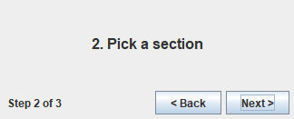
หลังคลิก Next ครั้งที่ 2 (ขั้นสุดท้าย)
Enrollment wizard
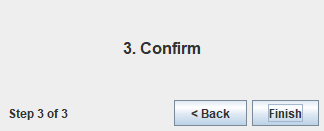
อธิบายทีละขั้น step เก็บว่าอยู่ขั้นไหน — CardLayout ไม่มีเมธอดบอกการ์ดปัจจุบัน ปุ่ม Back ปิดเมื่ออยู่ขั้นแรก ขั้นสุดท้ายเปลี่ยนข้อความ Next เป็น Finish refresh() เป็นจุดเดียวที่อัปเดตปุ่มและข้อความความคืบหน้า ลองคิดก่อน · CardLayout ถ้าลืมตั้งชื่อการ์ดตอน add แล้วเรียก cards.show(content, "form") จะเกิดอะไรขึ้น
ดูคำตอบ ไม่มีอะไรเกิดขึ้น (ไม่ error) เพราะไม่มีการ์ดชื่อนั้น — บั๊กลักษณะนี้หายาก จึงควรเก็บชื่อการ์ดเป็นค่าคงที่ (static final String) แทนการพิมพ์ซ้ำหลายที่
18.3 ปุ่มนำทางและตัวควบคุมการนำทาง
เมื่อหน้าจอแยกเป็นคลาส หน้าจอหนึ่งต้องสั่ง “ไปหน้าอื่น” ได้โดยไม่ต้องรู้จัก CardLayout โดยตรง วิธีที่ดีคือสร้างคลาสตัวควบคุม (เช่น Navigator หรือตัวหน้าต่างหลัก) ที่มีเมธอด goTo(name) แล้วส่งตัวควบคุมนี้ให้แต่ละหน้าผ่าน constructor
ตัวอย่าง 18.3.1 Navigator ที่ทุกหน้าใช้ร่วมกันแนวคิด: แต่ละหน้ารับ Navigator ใน constructor แล้วเรียก nav.goTo(...) ในปุ่ม — ชื่อหน้าเก็บเป็นค่าคงที่ป้องกันพิมพ์ผิด
NavigatorApp.java
import javax.swing.*;
import java.awt.*;
public class NavigatorApp {
public static void main (String [] args) {
SwingUtilities .invokeLater (() -> {
JFrame frame = new JFrame ("Navigator" );
frame.setDefaultCloseOperation (JFrame .EXIT_ON_CLOSE );
// ตัวกลางจัดการการเปลี่ยนหน้า
Navigator nav = new Navigator ();
// หน้าแต่ละหน้ารู้จัก Navigator
nav.add (Navigator .HOME , new SimplePage ("Home" , nav, "Start" , Navigator .MENU ));
nav.add (Navigator .MENU , new SimplePage ("Menu" , nav, "About" , Navigator .ABOUT ));
nav.add (Navigator .ABOUT , new SimplePage ("About: v1.0 by JHope" , nav, "Home" , Navigator .HOME ));
frame.add (nav.getContainer (), BorderLayout .CENTER );
frame.add (nav.getStatusBar (), BorderLayout .SOUTH );
frame.setSize (300 , 150 );
frame.setVisible (true );
});
}
}
class Navigator {
// ชื่อหน้าเป็นค่าคงที่ ป้องกันพิมพ์ผิด
static final String HOME = "home" , MENU = "menu" , ABOUT = "about" ;
private final CardLayout cards = new CardLayout ();
private final JPanel container = new JPanel (cards);
private final JLabel status = new JLabel (" page: " + HOME );
// ลงทะเบียนหน้าพร้อมชื่อ
void add (String name, JPanel page) { container.add (page, name); }
void goTo (String name) { // ทุกการเปลี่ยนหน้าผ่านเมธอดนี้
cards.show (container, name);
// อัปเดตแถบสถานะไปพร้อมกัน
status.setText (" page: " + name);
}
JPanel getContainer () { return container; }
JLabel getStatusBar () { return status; }
}
class SimplePage extends JPanel {
SimplePage (String title, Navigator nav, String buttonText, String target) {
super (new BorderLayout ());
setBorder (BorderFactory .createEmptyBorder (10 , 10 , 10 , 10 ));
JLabel t = new JLabel (title, SwingConstants .CENTER );
t.setFont (t.getFont ().deriveFont (Font .BOLD , 16f ));
JButton go = new JButton (buttonText);
// ปุ่มบอก Navigator ว่าจะไปหน้าไหน
go.addActionListener (e -> nav.goTo (target));
add (t, BorderLayout .CENTER );
add (go, BorderLayout .SOUTH );
}
}หน้าต่างที่ได้ (ภาพจากโปรแกรมจริง) Home → Start
Navigator
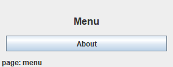
Menu → About
Navigator
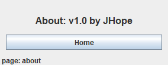
About → Home
Navigator
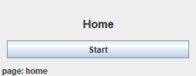
อธิบายทีละขั้น Navigator ห่อ CardLayout ไว้ หน้าอื่นไม่ต้องรู้รายละเอียด SimplePage รับ nav และชื่อหน้าปลายทาง status bar แสดงหน้าปัจจุบัน — อัปเดตใน goTo ที่เดียว เพิ่มหน้าใหม่ได้โดยไม่แก้หน้าเดิม ตัวอย่าง 18.3.2 ประวัติการนำทางและปุ่ม Backแนวคิด: เก็บประวัติหน้าที่เคยไปใน ArrayList แบบ stack: ไปหน้าใหม่ = เพิ่มท้าย, Back = ลบท้ายแล้วแสดงหน้าก่อนหน้า
BackHistory.java
import javax.swing.*;
import java.awt.*;
import java.util.ArrayList ;
public class BackHistory {
// ประวัติหน้าที่เคยไป
private static final ArrayList <String > history = new ArrayList <>();
private static final CardLayout cards = new CardLayout ();
private static final JPanel content = new JPanel (cards);
private static final JButton back = new JButton ("Back" );
private static final JLabel path = new JLabel ();
public static void main (String [] args) {
SwingUtilities .invokeLater (() -> {
JFrame frame = new JFrame ("History" );
frame.setDefaultCloseOperation (JFrame .EXIT_ON_CLOSE );
// สร้างการ์ดแต่ละหน้า
for (String name : new String []{"Home" , "Courses" , "Grades" }) {
JLabel l = new JLabel (name + " screen" , SwingConstants .CENTER );
l.setFont (l.getFont ().deriveFont (Font .BOLD , 18f ));
content.add (l, name);
}
JPanel nav = new JPanel ();
nav.add (back);
for (String name : new String []{"Home" , "Courses" , "Grades" }) {
JButton b = new JButton (name);
// ทุกปุ่มเรียก goTo
b.addActionListener (e -> goTo (name));
nav.add (b);
}
back.addActionListener (e -> goBack ());
goTo ("Home" );
frame.add (nav, BorderLayout .NORTH );
frame.add (content, BorderLayout .CENTER );
frame.add (path, BorderLayout .SOUTH );
frame.setSize (360 , 170 );
frame.setVisible (true );
});
}
static void goTo (String name) {
// ไม่บันทึกซ้ำถ้าอยู่หน้าเดิม
if (history.isEmpty () || !history.get (history.size () - 1 ).equals (name)) {
history.add (name);
}
show ();
}
static void goBack () {
// มีหน้าก่อนหน้าให้ย้อน
if (history.size () > 1 ) {
// ลบหน้าปัจจุบันออกจากประวัติ
history.remove (history.size () - 1 );
show ();
}
}
static void show () {
// แสดงหน้าสุดท้ายในประวัติ
cards.show (content, history.get (history.size () - 1 ));
back.setEnabled (history.size () > 1 );
// แสดงเส้นทาง Home > Courses > ...
path.setText (" " + String .join (" > " , history));
}
}หน้าต่างที่ได้ (ภาพจากโปรแกรมจริง) Home → Courses → Grades
History
Back ครั้งที่ 1
History
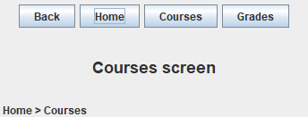
Back ครั้งที่ 2
History
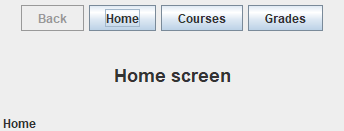
อธิบายทีละขั้น goTo เพิ่มชื่อหน้าลงท้าย history (ไม่เพิ่มซ้ำถ้ากดหน้าเดิม) goBack ลบหน้าล่าสุดออก แล้วแสดงหน้าที่อยู่ท้ายสุดตอนนี้ path แสดงเส้นทาง เช่น Home > Courses > Grades Back ถูกปิดเมื่อเหลือหน้าเดียว
18.4 แชร์ state ระหว่างหน้า
ข้อมูลที่ผู้ใช้กรอกในหน้าหนึ่งมักต้องใช้ในอีกหน้า เช่น ฟอร์ม → สรุป วิธีที่ปลอดภัยคือมี model ออบเจ็กต์เดียว ที่ทุกหน้าอ้างถึง: หน้าฟอร์มเขียนลง model ก่อนเปลี่ยนหน้า และหน้าสรุปอ่านจาก model ทุกครั้งที่ถูกแสดง (ไม่ใช่ตอนสร้างครั้งแรกเท่านั้น)
ตัวอย่าง 18.4.1 ฟอร์ม → สรุป ผ่าน model เดียวกันแนวคิด: Registration คือ model — FormPage เขียนลง model, SummaryPage มีเมธอด refresh() ที่อ่าน model ใหม่ทุกครั้งก่อนแสดง
SharedStateApp.java
import javax.swing.*;
import java.awt.*;
public class SharedStateApp {
public static void main (String [] args) {
SwingUtilities .invokeLater (() -> {
JFrame frame = new JFrame ("Registration" );
frame.setDefaultCloseOperation (JFrame .EXIT_ON_CLOSE );
// ข้อมูลกลางที่ทุกหน้าใช้ร่วมกัน
Registration model = new Registration ();
CardLayout cards = new CardLayout ();
JPanel content = new JPanel (cards);
// ส่ง model เดียวกันให้ทั้งสองหน้า
SummaryPage summary = new SummaryPage (model);
FormPage form = new FormPage (model);
// บอกฟอร์มว่ากด Next แล้วให้ทำอะไร
form.onNext (() -> {
summary.refresh (); // ดึงข้อมูลล่าสุดก่อนแสดง
cards.show (content, "summary" );
});
summary.onEdit (() -> cards.show (content, "form" ));
content.add (form, "form" );
content.add (summary, "summary" );
frame.setContentPane (content);
frame.setSize (320 , 160 );
frame.setVisible (true );
});
}
}
class Registration { // เก็บข้อมูลอย่างเดียว ไม่มีโค้ด GUI
String name = "" ;
String track = "" ;
}
class FormPage extends JPanel {
private final JTextField name = new JTextField (12 );
private final JComboBox <String > track = new JComboBox <>(new String []{"Software" , "Data" , "Network" , "Game" });
private final JButton next = new JButton ("Next" );
// ค่าเริ่มต้น: งานว่าง ไม่ทำอะไร
private Runnable onNext = () -> { };
FormPage (Registration model) {
super (new GridLayout (0 , 2 , 6 , 6 ));
setBorder (BorderFactory .createEmptyBorder (10 , 10 , 10 , 10 ));
add (new JLabel ("Name:" )); add (name);
add (new JLabel ("Track:" )); add (track);
add (new JLabel ()); add (next);
next.addActionListener (e -> {
// เขียนข้อมูลลง model
model.name = name.getText ().trim ();
model.track = (String ) track.getSelectedItem ();
onNext.run (); // แจ้งผู้ที่ลงทะเบียนไว้
});
}
// รับงานจากภายนอก
void onNext (Runnable action) { this .onNext = action; }
}
class SummaryPage extends JPanel {
private final Registration model;
private final JLabel text = new JLabel ();
private final JButton edit = new JButton ("Edit" );
SummaryPage (Registration model) {
super (new BorderLayout (0 , 8 ));
this .model = model;
setBorder (BorderFactory .createEmptyBorder (10 , 10 , 10 , 10 ));
add (new JLabel ("Please confirm:" ), BorderLayout .NORTH );
add (text, BorderLayout .CENTER );
add (edit, BorderLayout .SOUTH );
}
void refresh () { // อ่านข้อมูลจาก model มาแสดง
text.setText (model.name + " - " + model.track + " track" );
}
void onEdit (Runnable action) { edit.addActionListener (e -> action.run ()); }
}หน้าต่างที่ได้ (ภาพจากโปรแกรมจริง) กรอก JHope แล้ว Next → หน้าสรุป
Registration
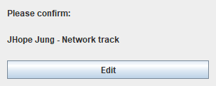
กลับไปแก้เป็น Suga แล้ว Next อีกครั้ง
Registration
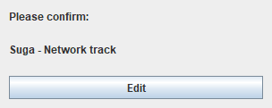
อธิบายทีละขั้น model ถูกสร้างครั้งเดียวและส่งให้ทั้งสองหน้า listener ของปุ่ม Next บันทึกลง model ก่อน แล้วจึงเรียก callback onNext ที่เปลี่ยนหน้า — ลำดับถูกกำหนดชัดในโค้ดเดียว (อย่าแยกเป็น listener 2 ตัว เพราะ Swing เรียก listener หลายตัวในลำดับย้อนกลับจากที่เพิ่ม หน้าสรุปจะได้ค่าเก่า) summary.refresh() อ่าน model ก่อนแสดงทุกครั้ง — แก้แล้วกลับมาจึงเห็นค่าใหม่ หน้าต่าง ๆ ไม่อ้างถึงกันโดยตรง สื่อสารผ่าน model และ callback (Runnable) บั๊กที่พบบ่อย: หน้าสรุปแสดงค่าเก่า ถ้า SummaryPage อ่านข้อมูลใน constructor ครั้งเดียว ข้อความจะไม่เปลี่ยนเมื่อผู้ใช้กลับไปแก้ ต้องมีเมธอด refresh() ที่ถูกเรียกทุกครั้งก่อนแสดงหน้า
18.5 CardLayout หรือหลายหน้าต่าง (JDialog / JFrame)
ใช้ เมื่อ ตัวอย่าง CardLayout หน้าจอหลักที่ผู้ใช้สลับไปมา อยู่ในหน้าต่างเดียว Home / Courses / Grades JDialog (modal) งานสั้นที่ต้องได้คำตอบก่อนทำต่อ เพิ่ม/แก้ไขรายการ, ตั้งค่า, ล็อกอิน JOptionPane ข้อความหรือคำถามง่าย ๆ ยืนยันลบ, แจ้ง error JFrame ใหม่ หน้าต่างอิสระที่เปิดค้างคู่กันได้ (พบไม่บ่อย) หน้าต่างแสดงกราฟแยก
ตัวอย่าง 18.5.1 JDialog แบบ modal สำหรับเพิ่มรายการแนวคิด: JDialog modal บล็อกหน้าต่างหลักจนกว่าจะปิด — โค้ดหลัง setVisible(true) จะรอจนผู้ใช้กด OK/Cancel จึงอ่านผลลัพธ์ได้ทันที ภาพแสดงหน้าต่างหลักพร้อม dialog ที่เปิดอยู่
DialogDemo.java
import javax.swing.*;
import java.awt.*;
public class DialogDemo {
public static void main (String [] args) {
SwingUtilities .invokeLater (() -> {
JFrame frame = new JFrame ("My courses" );
frame.setDefaultCloseOperation (JFrame .EXIT_ON_CLOSE );
DefaultListModel <String > courses = new DefaultListModel <>();
courses.addElement ("CS101 Programming (3)" );
JButton add = new JButton ("Add course..." );
add.addActionListener (e -> {
// สร้าง dialog โดยมี frame เป็นเจ้าของ
CourseDialog dialog = new CourseDialog (frame);
// modal: รอจนกว่า dialog จะปิด
dialog.setVisible (true );
// ปิดแล้วจึงอ่านผลลัพธ์
if (dialog.getResult () != null ) courses.addElement (dialog.getResult ());
});
frame.add (new JScrollPane (new JList <>(courses)), BorderLayout .CENTER );
frame.add (add, BorderLayout .SOUTH );
frame.setSize (300 , 180 );
frame.setLocation (80 , 80 );
frame.setVisible (true );
});
}
}
// JDialog: หน้าต่างย่อยของหน้าต่างหลัก
class CourseDialog extends JDialog {
private String result = null ; // null = ผู้ใช้กดยกเลิก
CourseDialog (JFrame owner) {
// true = modal (บล็อกหน้าต่างหลัก)
super (owner, "Add course" , true );
JTextField code = new JTextField (8 );
JSpinner credits = new JSpinner (new SpinnerNumberModel (3 , 1 , 6 , 1 ));
JButton ok = new JButton ("OK" );
JButton cancel = new JButton ("Cancel" );
ok.addActionListener (e -> {
if (code.getText ().isBlank ()) {
// this = dialog เป็นเจ้าของกล่องข้อความ
JOptionPane .showMessageDialog (this , "Course code is required" );
return ;
}
// เก็บผลก่อนปิด
result = code.getText ().trim () + " (" + credits.getValue () + ")" ;
// ปิด dialog → setVisible(true) คืนค่ากลับ
dispose ();
});
cancel.addActionListener (e -> dispose ());
JPanel form = new JPanel (new GridLayout (0 , 2 , 6 , 6 ));
form.setBorder (BorderFactory .createEmptyBorder (10 , 10 , 10 , 10 ));
form.add (new JLabel ("Code:" )); form.add (code);
form.add (new JLabel ("Credits:" )); form.add (credits);
form.add (ok); form.add (cancel);
setContentPane (form);
pack ();
setLocationRelativeTo (owner); // แสดงกลางหน้าต่างหลัก
}
String getResult () { return result; }
}หน้าต่างที่ได้ (ภาพจากโปรแกรมจริง) My courses
Add course
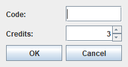
อธิบายทีละขั้น super(owner, "Add course", true) — true คือ modalsetVisible(true) หยุดรอจนกว่า dialog จะ dispose() ผลลัพธ์เก็บใน field result (null = ยกเลิก) หน้าต่างหลักอ่าน getResult() แล้วเพิ่มลงรายการ ทำไมไม่ควรเปิด JFrame ใหม่ทุกครั้งที่เปลี่ยนหน้า ผู้ใช้เห็นหลายหน้าต่างใน taskbar สับสนว่าอันไหนคืออันหลัก ต้องจัดการปิด/ซ่อนหน้าต่างเก่าเอง ถ้าใช้ EXIT_ON_CLOSE กับทุกบาน ปิดบานเดียวโปรแกรมจบทั้งหมด การส่งข้อมูลระหว่างหน้าต่างยุ่งยากกว่า CardLayout + model
แบบฝึกหัดท้ายบท
ภาพตัวอย่างแสดงหลายสถานะของโปรแกรมตามลำดับการกดปุ่มในคำบรรยายใต้ภาพ ให้ลองกดตามลำดับเดียวกันแล้วเทียบผล
ระดับความยาก: ★ ง่าย ★★ ปานกลาง ★★★ ท้าทาย
Exercise 18.1 สองหน้าจอสลับไปมา★ ง่าย สร้างหน้าต่างที่ใช้ CardLayout มี 2 การ์ด: “Welcome” (มีปุ่ม Go to info) และ “Info” (แสดงข้อความ 2 บรรทัดและปุ่ม Back) แต่ละการ์ดพื้นหลังต่างสีกัน
สิ่งที่ต้องทำ ตั้งชื่อการ์ดเป็นค่าคงที่ static final ใช้ cards.show ตัวอย่างหน้าจอ (ภาพจากโปรแกรมเฉลย) เริ่มต้น
Two cards
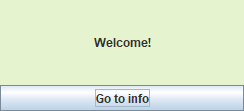
หลังคลิก Go to info
Two cards
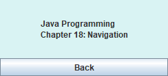
ใส่รหัสเพื่อดูเฉลย ตัวอย่างคำตอบ TwoCards.java
import javax.swing.*;
import java.awt.*;
public class TwoCards {
// ชื่อการ์ดเป็นค่าคงที่
static final String WELCOME = "welcome" , INFO = "info" ;
public static void main (String [] args) {
SwingUtilities .invokeLater (() -> {
JFrame frame = new JFrame ("Two cards" );
frame.setDefaultCloseOperation (JFrame .EXIT_ON_CLOSE );
CardLayout cards = new CardLayout ();
JPanel content = new JPanel (cards);
JPanel welcome = new JPanel (new BorderLayout ());
welcome.setBackground (new Color (229 , 244 , 207 ));
welcome.add (new JLabel ("Welcome!" , SwingConstants .CENTER ), BorderLayout .CENTER );
JButton toInfo = new JButton ("Go to info" );
// ไปการ์ด info
toInfo.addActionListener (e -> cards.show (content, INFO ));
welcome.add (toInfo, BorderLayout .SOUTH );
JPanel info = new JPanel (new BorderLayout ());
info.setBackground (new Color (217 , 243 , 243 ));
info.add (new JLabel ("<html>Java Programming<br>Chapter 18: Navigation</html>" , SwingConstants .CENTER ), BorderLayout .CENTER );
JButton back = new JButton ("Back" );
// กลับการ์ด welcome
back.addActionListener (e -> cards.show (content, WELCOME ));
info.add (back, BorderLayout .SOUTH );
content.add (welcome, WELCOME ); // เพิ่มการ์ดพร้อมชื่อ
content.add (info, INFO );
frame.setContentPane (content);
frame.setSize (260 , 150 );
frame.setVisible (true );
});
}
}Exercise 18.2 เมนูด้านซ้ายแบบแท็บ★ ง่าย สร้างหน้าต่างที่มีปุ่มเมนูเรียงแนวตั้งด้านซ้าย (Dashboard, Students, Reports) และพื้นที่เนื้อหาด้านขวาเป็น CardLayout คลิกปุ่มใดให้แสดงการ์ดที่ตรงกัน และปุ่มของหน้าปัจจุบันถูกปิด (disabled) เพื่อบอกว่าอยู่หน้าไหน
สิ่งที่ต้องทำ ปุ่มเมนูอยู่ใน JPanel GridLayout(0, 1) ที่ WEST เก็บปุ่มไว้ในอาเรย์เพื่อเปิด/ปิดสถานะด้วยลูป สร้างปุ่มและการ์ดด้วยลูปจากอาเรย์ชื่อ ตัวอย่างหน้าจอ (ภาพจากโปรแกรมเฉลย) หลังคลิก Students
Admin
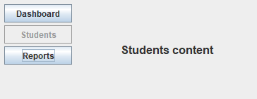
ใส่รหัสเพื่อดูเฉลย ตัวอย่างคำตอบ SideMenu.java
import javax.swing.*;
import java.awt.*;
public class SideMenu {
public static void main (String [] args) {
String [] pages = {"Dashboard" , "Students" , "Reports" };
SwingUtilities .invokeLater (() -> {
JFrame frame = new JFrame ("Admin" );
frame.setDefaultCloseOperation (JFrame .EXIT_ON_CLOSE );
CardLayout cards = new CardLayout ();
JPanel content = new JPanel (cards);
JPanel menu = new JPanel (new GridLayout (0 , 1 , 4 , 4 ));
// เก็บปุ่มไว้ในอาเรย์ เพื่อปรับสถานะทีหลัง
JButton [] buttons = new JButton [pages.length];
for (int i = 0 ; i < pages.length; i++) {
// ตัวแปรใหม่ทุกรอบ lambda จึงใช้ได้
String name = pages[i];
JLabel label = new JLabel (name + " content" , SwingConstants .CENTER );
label.setFont (label.getFont ().deriveFont (Font .BOLD , 16f ));
content.add (label, name);
buttons[i] = new JButton (name);
buttons[i].addActionListener (e -> {
cards.show (content, name);
// ปิดปุ่มของหน้าที่กำลังแสดง
for (JButton b : buttons) b.setEnabled (!b.getText ().equals (name));
});
menu.add (buttons[i]);
}
buttons[0 ].setEnabled (false ); // เริ่มที่หน้าแรก
JPanel west = new JPanel (new BorderLayout ());
west.setBorder (BorderFactory .createEmptyBorder (6 , 6 , 6 , 6 ));
west.add (menu, BorderLayout .NORTH );
frame.add (west, BorderLayout .WEST );
frame.add (content, BorderLayout .CENTER );
frame.setSize (380 , 180 );
frame.setVisible (true );
});
}
}Exercise 18.3 วิซาร์ดสมัครสมาชิก 3 ขั้นพร้อมตรวจข้อมูล★★ ปานกลาง วิซาร์ด 3 ขั้น: (1) ชื่อและอีเมล (2) เลือกแพ็กเกจด้วย radio: Free / Pro 99 / Team 299 (3) สรุปข้อมูลทั้งหมด ปุ่ม Back/Next ด้านล่าง ปุ่ม Next ในขั้นที่ 1 ต้องตรวจว่าชื่อไม่ว่างและอีเมลมี @ ก่อนไปต่อ ถ้าผิดให้แสดงข้อความสีแดง ขั้นสุดท้ายปุ่ม Next เปลี่ยนเป็น Finish
สิ่งที่ต้องทำ เก็บหมายเลขขั้นในตัวแปร สร้างข้อความสรุปใหม่ทุกครั้งที่เข้าขั้นที่ 3 ภาพตัวอย่าง: กด Next โดยอีเมลผิด, แก้แล้ว Next, เลือก Pro, Next ตัวอย่างหน้าจอ (ภาพจากโปรแกรมเฉลย) อีเมลไม่มี @ แล้วกด Next
Sign up
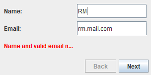
แก้อีเมล → เลือก Pro → หน้าสรุป
Sign up
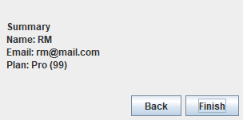
ใส่รหัสเพื่อดูเฉลย ตัวอย่างคำตอบ SignupWizard.java
import javax.swing.*;
import java.awt.*;
public class SignupWizard {
private int step = 0 ; // ขั้นตอนปัจจุบัน (0-2)
private final CardLayout cards = new CardLayout ();
private final JPanel content = new JPanel (cards);
private final JTextField name = new JTextField (12 );
private final JTextField email = new JTextField (12 );
private final JLabel error = new JLabel (" " );
// ตัวเลือกแผนเก็บในอาเรย์
private final JRadioButton [] plans = {new JRadioButton ("Free" , true ), new JRadioButton ("Pro (99)" ), new JRadioButton ("Team (299)" )};
private final JLabel summary = new JLabel ();
private final JButton back = new JButton ("Back" );
private final JButton next = new JButton ("Next" );
public static void main (String [] args) {
SwingUtilities .invokeLater (() -> new SignupWizard ().show ());
}
private void show () {
JFrame frame = new JFrame ("Sign up" );
frame.setDefaultCloseOperation (JFrame .EXIT_ON_CLOSE );
// การ์ดที่ 1: ข้อมูลผู้ใช้
JPanel s1 = new JPanel (new GridLayout (0 , 2 , 6 , 6 ));
s1.add (new JLabel ("Name:" )); s1.add (name);
s1.add (new JLabel ("Email:" )); s1.add (email);
error.setForeground (Color .RED );
s1.add (error);
// การ์ดที่ 2: เลือกแผน
JPanel s2 = new JPanel (new GridLayout (0 , 1 ));
ButtonGroup g = new ButtonGroup ();
for (JRadioButton r : plans) { g.add (r); s2.add (r); }
// การ์ดที่ 3: สรุป
JPanel s3 = new JPanel (new BorderLayout ());
s3.add (summary, BorderLayout .CENTER );
content.add (s1, "1" );
content.add (s2, "2" );
content.add (s3, "3" );
content.setBorder (BorderFactory .createEmptyBorder (8 , 8 , 8 , 8 ));
back.addActionListener (e -> { step--; cards.previous (content); refresh (); });
next.addActionListener (e -> onNext (frame));
JPanel bottom = new JPanel (new FlowLayout (FlowLayout .RIGHT ));
bottom.add (back);
bottom.add (next);
refresh ();
frame.add (content, BorderLayout .CENTER );
frame.add (bottom, BorderLayout .SOUTH );
frame.setSize (320 , 190 );
frame.setVisible (true );
}
private void onNext (JFrame frame) {
if (step == 0 ) { // ตรวจข้อมูลก่อนออกจากขั้นที่ 1
if (name.getText ().isBlank () || !email.getText ().contains ("@" )) {
error.setText ("Name and valid email needed" );
return ; // ข้อมูลไม่ครบ → อยู่ขั้นเดิม
}
error.setText (" " );
}
if (step == 2 ) { // ขั้นสุดท้าย → เสร็จสิ้น
JOptionPane .showMessageDialog (frame, "Account created!" );
return ;
}
step++;
if (step == 2 ) { // เข้าขั้นสรุป → สร้างข้อความสรุป
String plan = "" ;
// หาแผนที่เลือก
for (JRadioButton r : plans) if (r.isSelected ()) plan = r.getText ();
summary.setText ("<html><b>Summary</b><br>Name: " + name.getText ().trim ()
+ "<br>Email: " + email.getText ().trim () + "<br>Plan: " + plan + "</html>" );
}
cards.next (content);
refresh ();
}
private void refresh () {
back.setEnabled (step > 0 );
next.setText (step == 2 ? "Finish" : "Next" );
}
}Exercise 18.4 หน้ารายการ → หน้ารายละเอียด★★ ปานกลาง สร้างแอปที่มีหน้ารายการสินค้า (JList) และหน้ารายละเอียด เมื่อดับเบิลคลิกหรือกดปุ่ม View ให้ไปหน้ารายละเอียดที่แสดงชื่อ ราคา และคำอธิบายของสินค้าที่เลือก (ข้อมูลอยู่ใน ArrayList ของออบเจ็กต์ Product) มีปุ่ม Back to list ถ้ายังไม่ได้เลือกสินค้าให้ปุ่ม View ถูกปิด
สิ่งที่ต้องทำ หน้ารายละเอียดมีเมธอด showProduct(Product p) อัปเดต label ทุกตัว ใช้ ListSelectionListener เปิด/ปิดปุ่ม View ภาพตัวอย่าง: เลือกรายการที่ 2 แล้วกด View ตัวอย่างหน้าจอ (ภาพจากโปรแกรมเฉลย) เลือก Headset
Shop
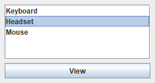
หลังกด View
Shop
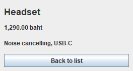
ใส่รหัสเพื่อดูเฉลย ตัวอย่างคำตอบ ListDetailApp.java
import javax.swing.*;
import java.awt.*;
import java.util.ArrayList ;
public class ListDetailApp {
public static void main (String [] args) {
// ข้อมูลจริง
ArrayList <Product > products = new ArrayList <>();
products.add (new Product ("Keyboard" , 890 , "Mechanical, blue switches" ));
products.add (new Product ("Headset" , 1290 , "Noise cancelling, USB-C" ));
products.add (new Product ("Mouse" , 390 , "Wireless, 3 buttons" ));
SwingUtilities .invokeLater (() -> {
JFrame frame = new JFrame ("Shop" );
frame.setDefaultCloseOperation (JFrame .EXIT_ON_CLOSE );
CardLayout cards = new CardLayout ();
JPanel content = new JPanel (cards);
DefaultListModel <String > names = new DefaultListModel <>();
// JList แสดงเฉพาะชื่อ
for (Product p : products) names.addElement (p.name);
JList <String > list = new JList <>(names);
JButton view = new JButton ("View" );
view.setEnabled (false ); // ยังไม่ได้เลือก กดดูไม่ได้
JPanel listPage = new JPanel (new BorderLayout (0 , 6 ));
listPage.add (new JScrollPane (list), BorderLayout .CENTER );
listPage.add (view, BorderLayout .SOUTH );
// ส่งงาน "กลับหน้ารายการ" ให้หน้ารายละเอียด
DetailPage detail = new DetailPage (() -> cards.show (content, "list" ));
// เลือกแล้วจึงกด View ได้
list.addListSelectionListener (e -> view.setEnabled (list.getSelectedIndex () >= 0 ));
view.addActionListener (e -> {
// ส่งสินค้าที่เลือกไปแสดง
detail.showProduct (products.get (list.getSelectedIndex ()));
cards.show (content, "detail" );
});
content.add (listPage, "list" );
content.add (detail, "detail" );
content.setBorder (BorderFactory .createEmptyBorder (8 , 8 , 8 , 8 ));
frame.setContentPane (content);
frame.setSize (280 , 180 );
frame.setVisible (true );
});
}
}
class Product {
final String name, description;
final double price;
Product (String name, double price, String description) { this .name = name; this .price = price; this .description = description; }
}
class DetailPage extends JPanel {
private final JLabel name = new JLabel (), price = new JLabel (), desc = new JLabel ();
// รับงานย้อนกลับเป็น Runnable
DetailPage (Runnable onBack) {
super (new BorderLayout (0 , 6 ));
name.setFont (name.getFont ().deriveFont (Font .BOLD , 18f ));
JPanel info = new JPanel (new GridLayout (0 , 1 ));
info.add (name);
info.add (price);
info.add (desc);
JButton back = new JButton ("Back to list" );
// หน้านี้ไม่ต้องรู้จัก CardLayout
back.addActionListener (e -> onBack.run ());
add (info, BorderLayout .CENTER );
add (back, BorderLayout .SOUTH );
}
void showProduct (Product p) { // เติมข้อมูลก่อนแสดงหน้า
name.setText (p.name);
price.setText (String .format ("%,.2f baht" , p.price));
desc.setText (p.description);
}
}Exercise 18.5 แอปบันทึกรายรับรายจ่าย 3 หน้า★★★ ท้าทาย สร้างแอปที่มี 3 หน้าใน CardLayout และแถบนำทางด้านบน:
Add : ฟอร์มรายการ (คำอธิบาย, จำนวนเงิน, radio รายรับ/รายจ่าย) ตรวจข้อมูลแล้วบันทึกList : แสดงทุกรายการ (รายรับมีเครื่องหมาย + รายจ่าย −)Summary : รายรับรวม รายจ่ายรวม ยอดคงเหลือ (สีแดงถ้าติดลบ)ทุกหน้าใช้ model เดียวกัน (Ledger ที่มี ArrayList<Entry>) หน้า List และ Summary ต้อง refresh ทุกครั้งที่ถูกแสดง
สิ่งที่ต้องทำ คลาส Ledger มีเมธอด add, totalIncome, totalExpense, balance เมธอด goTo(name) ในตัวควบคุม: เรียก refresh ของหน้านั้นก่อน show ภาพตัวอย่าง: บันทึก 3 รายการ แล้วดูหน้า List และ Summary ตัวอย่างหน้าจอ (ภาพจากโปรแกรมเฉลย) หน้า List หลังบันทึก 3 รายการ
Ledger
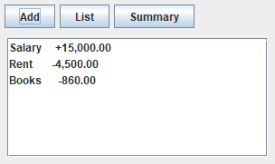
หน้า Summary
Ledger
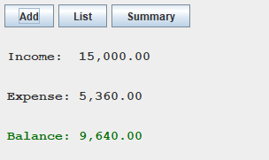
ใส่รหัสเพื่อดูเฉลย ตัวอย่างคำตอบ LedgerApp.java
import javax.swing.*;
import java.awt.*;
import java.util.ArrayList ;
public class LedgerApp {
// ข้อมูลจริงอยู่ในคลาส Ledger
private final Ledger ledger = new Ledger ();
private final CardLayout cards = new CardLayout ();
private final JPanel content = new JPanel (cards);
private final DefaultListModel <String > listModel = new DefaultListModel <>();
// label ของหน้าสรุป
private final JLabel income = new JLabel (), expense = new JLabel (), balance = new JLabel ();
public static void main (String [] args) {
SwingUtilities .invokeLater (() -> new LedgerApp ().show ());
}
private void show () {
JFrame frame = new JFrame ("Ledger" );
frame.setDefaultCloseOperation (JFrame .EXIT_ON_CLOSE );
// แต่ละหน้าสร้างจากเมธอด
content.add (addPage (), "Add" );
content.add (new JScrollPane (new JList <>(listModel)), "List" );
content.add (summaryPage (), "Summary" );
content.setBorder (BorderFactory .createEmptyBorder (6 , 8 , 8 , 8 ));
JPanel nav = new JPanel (new FlowLayout (FlowLayout .LEFT ));
for (String name : new String []{"Add" , "List" , "Summary" }) {
JButton b = new JButton (name);
// ทุกปุ่มไปผ่าน goTo
b.addActionListener (e -> goTo (name));
nav.add (b);
}
frame.add (nav, BorderLayout .NORTH );
frame.add (content, BorderLayout .CENTER );
frame.setSize (320 , 220 );
frame.setVisible (true );
}
private void goTo (String name) {
// เข้าหน้ารายการ → สร้างรายการใหม่จากข้อมูลล่าสุด
if (name.equals ("List" )) {
listModel.clear ();
for (Entry e : ledger.entries) {
listModel.addElement (String .format ("%-10s %s%,.2f" , e.description, e.income ? "+" : "-" , e.amount));
}
// เข้าหน้าสรุป → คำนวณยอดใหม่
} else if (name.equals ("Summary" )) {
income.setText (String .format ("Income: %,.2f" , ledger.totalIncome ()));
expense.setText (String .format ("Expense: %,.2f" , ledger.totalExpense ()));
balance.setText (String .format ("Balance: %,.2f" , ledger.balance ()));
// ติดลบเป็นสีแดง
balance.setForeground (ledger.balance () < 0 ? Color .RED : new Color (0 , 110 , 0 ));
}
cards.show (content, name);
}
private JPanel addPage () {
JTextField desc = new JTextField (10 );
JTextField amount = new JTextField (10 );
JRadioButton in = new JRadioButton ("Income" , true );
JRadioButton out = new JRadioButton ("Expense" );
ButtonGroup g = new ButtonGroup ();
g.add (in);
g.add (out);
JLabel msg = new JLabel (" " );
JButton save = new JButton ("Save" );
save.addActionListener (e -> {
try {
double a = Double .parseDouble (amount.getText ().trim ());
// ข้อมูลไม่ครบ → ใช้ catch เดียวกัน
if (desc.getText ().isBlank () || a <= 0 ) throw new NumberFormatException ();
// บันทึกลง model
ledger.add (new Entry (desc.getText ().trim (), a, in.isSelected ()));
msg.setForeground (new Color (0 , 110 , 0 ));
msg.setText ("Saved (" + ledger.entries.size () + " entries)" );
desc.setText ("" );
amount.setText ("" );
in.setSelected (true ); // ล้างฟอร์มหลังบันทึก
} catch (NumberFormatException ex) {
msg.setForeground (Color .RED );
msg.setText ("Need description and amount > 0" );
}
});
JPanel p = new JPanel (new GridLayout (0 , 2 , 6 , 4 ));
p.add (new JLabel ("Description:" )); p.add (desc);
p.add (new JLabel ("Amount:" )); p.add (amount);
p.add (in); p.add (out);
p.add (msg); p.add (save);
return p;
}
private JPanel summaryPage () {
JPanel p = new JPanel (new GridLayout (0 , 1 , 4 , 4 ));
// ตั้งฟอนต์และเพิ่มทั้ง 3 label
for (JLabel l : new JLabel []{income, expense, balance}) {
l.setFont (new Font ("Monospaced" , Font .BOLD , 15 ));
p.add (l);
}
return p;
}
}
class Entry {
final String description;
final double amount;
final boolean income;
Entry (String description, double amount, boolean income) { this .description = description; this .amount = amount; this .income = income; }
}
class Ledger {
// รายการทั้งหมด
final ArrayList <Entry > entries = new ArrayList <>();
void add (Entry e) { entries.add (e); }
double totalIncome () {
double sum = 0 ;
// รวมเฉพาะรายรับ
for (Entry e : entries) if (e.income) sum += e.amount;
return sum;
}
double totalExpense () {
double sum = 0 ;
for (Entry e : entries) if (!e.income) sum += e.amount;
return sum;
}
// ยอดคงเหลือ
double balance () { return totalIncome () - totalExpense (); }
}Exercise 18.6 ล็อกอินด้วย JDialog ก่อนเข้าแอป★★★ ท้าทาย เมื่อเปิดโปรแกรม ให้แสดง JDialog modal สำหรับล็อกอิน (username, password, ปุ่ม Login/Cancel) ก่อนหน้าต่างหลักจะทำงาน บัญชีที่ถูกต้องเก็บในอาเรย์ {"jhope", "suga"} รหัสผ่าน {"java1234", "swing5678"} ล็อกอินผิดให้แสดงข้อความสีแดงใน dialog และนับครั้ง ผิดครบ 3 ครั้งให้ปิดโปรแกรม ถ้าสำเร็จ หน้าต่างหลักแสดง “Welcome, ชื่อ” และปุ่ม Logout ที่เปิด dialog ล็อกอินใหม่
สิ่งที่ต้องทำ คลาส LoginDialog extends JDialog มี getUser() คืน null ถ้ายกเลิก ตรวจรหัสผ่านด้วย new String(pass.getPassword()) ภาพตัวอย่าง: ใส่รหัสผิด 1 ครั้ง (dialog ยังเปิดอยู่) ตัวอย่างหน้าจอ (ภาพจากโปรแกรมเฉลย) Main app
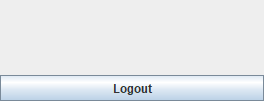
Login
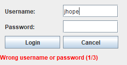
ใส่รหัสเพื่อดูเฉลย ตัวอย่างคำตอบ LoginFirstApp.java
import javax.swing.*;
import java.awt.*;
public class LoginFirstApp {
// ผู้ใช้และรหัสผ่านเป็นอาเรย์คู่ขนาน
static final String [] USERS = {"jhope" , "suga" };
static final String [] PASSWORDS = {"java1234" , "swing5678" };
public static void main (String [] args) {
SwingUtilities .invokeLater (() -> {
JFrame frame = new JFrame ("Main app" );
frame.setDefaultCloseOperation (JFrame .EXIT_ON_CLOSE );
JLabel welcome = new JLabel ("" , SwingConstants .CENTER );
welcome.setFont (welcome.getFont ().deriveFont (Font .BOLD , 16f ));
JButton logout = new JButton ("Logout" );
frame.add (welcome, BorderLayout .CENTER );
frame.add (logout, BorderLayout .SOUTH );
frame.setSize (280 , 140 );
frame.setLocation (60 , 60 );
// งาน login ใช้ทั้งตอนเริ่มและตอน logout
Runnable login = () -> {
LoginDialog d = new LoginDialog (frame);
// รอจนกว่า dialog จะปิด
d.setVisible (true );
// null = ยกเลิกหรือผิดเกิน 3 ครั้ง
if (d.getUser () == null ) {
frame.dispose ();
System .exit (0 ); // จบโปรแกรม
}
welcome.setText ("Welcome, " + d.getUser ());
};
logout.addActionListener (e -> login.run ());
frame.setVisible (true );
login.run (); // เปิด dialog หลังแสดงหน้าต่างหลัก
});
}
}
class LoginDialog extends JDialog {
private String user = null ; // ชื่อผู้ใช้ที่ login สำเร็จ
private int failures = 0 ; // จำนวนครั้งที่ผิด
LoginDialog (JFrame owner) {
super (owner, "Login" , true );
// กด X ปิดเฉพาะ dialog
setDefaultCloseOperation (JDialog .DISPOSE_ON_CLOSE );
JTextField name = new JTextField (10 );
JPasswordField pass = new JPasswordField (10 );
JLabel error = new JLabel (" " );
error.setForeground (Color .RED );
JButton ok = new JButton ("Login" );
JButton cancel = new JButton ("Cancel" );
ok.addActionListener (e -> {
String u = name.getText ().trim ();
// getPassword() คืน char[]
String p = new String (pass.getPassword ());
// ตรวจกับผู้ใช้ทุกคน
for (int i = 0 ; i < LoginFirstApp .USERS .length; i++) {
// ชื่อและรหัสตรงกันที่ index เดียวกัน
if (LoginFirstApp .USERS [i].equals (u) && LoginFirstApp .PASSWORDS [i].equals (p)) {
user = u;
dispose ();
return ;
}
}
failures++;
if (failures >= 3 ) { // ผิดครบ 3 ครั้ง
JOptionPane .showMessageDialog (this , "Too many attempts" );
dispose ();
return ;
}
error.setText ("Wrong username or password (" + failures + "/3)" );
pass.setText ("" ); // ล้างช่องรหัสผ่าน
pack ();
});
cancel.addActionListener (e -> dispose ());
JPanel form = new JPanel (new GridLayout (0 , 2 , 6 , 6 ));
form.setBorder (BorderFactory .createEmptyBorder (10 , 10 , 10 , 10 ));
form.add (new JLabel ("Username:" )); form.add (name);
form.add (new JLabel ("Password:" )); form.add (pass);
form.add (ok); form.add (cancel);
JPanel root = new JPanel (new BorderLayout ());
root.add (form, BorderLayout .CENTER );
root.add (error, BorderLayout .SOUTH );
root.setBorder (BorderFactory .createEmptyBorder (0 , 0 , 8 , 8 ));
setContentPane (root);
pack ();
setLocationRelativeTo (owner);
}
String getUser () { return user; }
}หน้าต่างหลักแสดงก่อนแล้วจึงเปิด dialog — ภาพตัวอย่างจึงเห็นทั้งสองบาน หลังผิด 3 ครั้งหรือกด Cancel getUser() เป็น null โปรแกรมจึงปิด